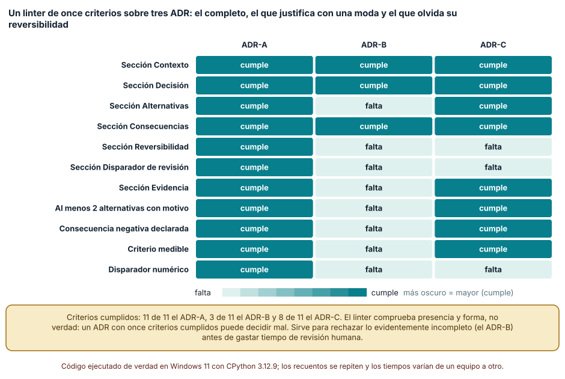
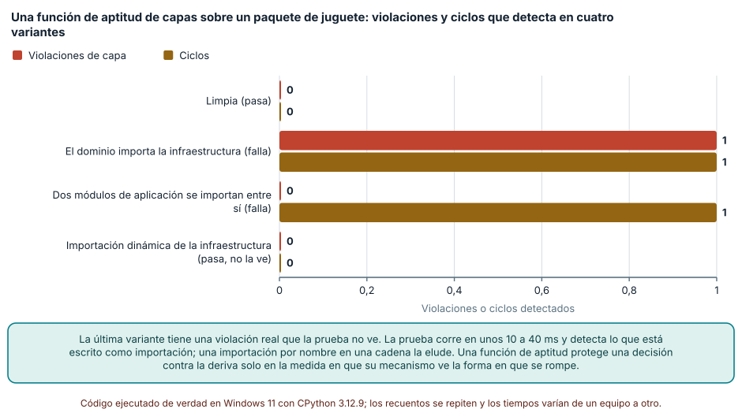
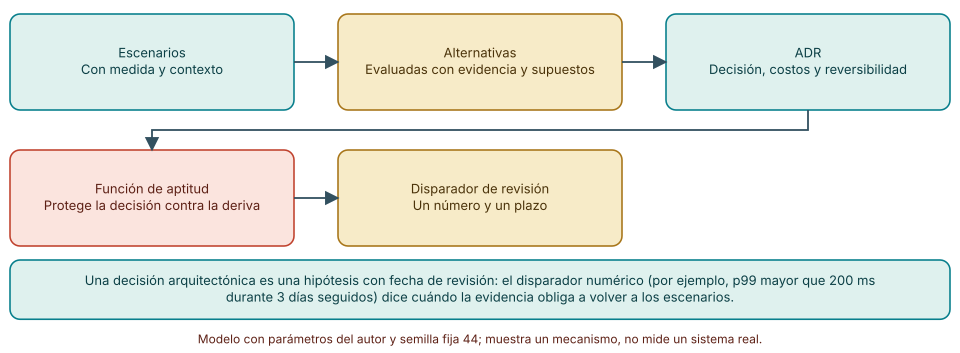

← SE-539 — Taller: seleccionar un estilo con escenarios de calidad · ↑ Parte 44 · 📚 Índice completo · 🌐 Portal · SE-577 — WebAssembly y WASI →
Punto profesional y fundamento pedagógico
Punto profesional. El proyecto existe para que produzcas el artefacto con que se cierra una decisión arquitectónica en un equipo profesional: un registro de decisión (ADR) que otra persona pueda leer dentro de dos años, entender por qué se decidió así, comprobar si los supuestos siguen siendo ciertos y reabrirla con evidencia. Un ADR bueno no es un acta. Es una hipótesis con fecha de revisión: dice qué fuerzas la motivaron, qué alternativas se descartaron y por qué, qué se acepta perder, qué medida la protege y qué número haría reconsiderarla. Un ADR malo justifica una decisión con una moda («es la mejor práctica») y se vuelve irrefutable justo cuando más falta hace discutirlo.
Por qué aparece aquí. Cierra la Parte 44 y es su proyecto integrador: toma la decisión que el taller de SE-539 produjo (con su margen, su supuesto sensible y su disparador) y la convierte en un registro defendible con una prueba automática que la protege. Retoma el ADR y las funciones de aptitud que presentó la Parte 25 (SE-308 y SE-309) y los aplica a los estilos de esta parte, con una comprobación ejecutable de cada elemento.
Error conceptual que debe corregir. Creer que el valor del ADR está en el documento. Está en las tres cosas que lo vuelven revisable: las consecuencias negativas escritas por quien decide (si solo hay ventajas, no se evaluó nada), el disparador numérico de revisión (si no hay un número, la decisión no caduca) y la prueba que la protege contra la deriva (si la decisión se viola en silencio, el documento miente). En el experimento, un ADR con las once características se distingue de uno que justifica con una moda por 11 criterios frente a 3, y una prueba de arquitectura detecta una violación y un ciclo que ninguna revisión de código notaría a tiempo, y no ve una importación dinámica.
Secuencia de aprendizaje. Antes de ejecutar, predices cuántas de once características de un ADR cumplen tres registros de ejemplo y cuáles de cuatro variantes de un paquete viola una prueba de capas. Después ejecutas un analizador de ADR y una función de aptitud basada en el árbol sintáctico, ves qué detectan y qué no, y escribes tu propio ADR con su disparador y su prueba.
Evidencia de aprendizaje. adr-estilo.md con tu ADR completo, su lista de supuestos de vigilancia con la medida de cada uno, una función de aptitud ejecutable que protege al menos una restricción del estilo elegido, el resultado del analizador sobre tu ADR y una nota de revisión que cite cuándo y con qué disparador se reabre.
Límite de la conclusión. El analizador comprueba presencia y forma (secciones, alternativas con motivo, un número y una unidad), no que la decisión sea acertada; la función de aptitud usa el árbol sintáctico de Python sobre un paquete de juguete creado en un directorio temporal. Ambos son herramientas del autor para ejercitar el método. No se evaluó ningún ADR real, no se ejecutó ninguna herramienta de arquitectura de terceros ni se invocó ningún modelo de lenguaje, y la afirmación de que un ADR bueno mejore las decisiones de un equipo no se midió.
Trazabilidad fuente → afirmación
| Fuente primaria u oficial | Afirmación que respalda | Lo que no prueba |
|---|---|---|
| Nygard, «Documenting Architecture Decisions» | Propone registros breves con título, estado, contexto, decisión y consecuencias, guardados con el código. | No fija un formato obligatorio ni mide su efecto. |
| Architectural Decision Records (adr.github.io) | Recoge plantillas y herramientas de ADR, incluidas variantes con opciones consideradas y consecuencias. | No avala ninguna plantilla concreta. |
| Azure Well-Architected, «Maintain an architecture decision record» | Describe el contenido y el uso de un registro de decisiones en un equipo. | No mide la calidad de los registros. |
| ArchUnit | Muestra pruebas de arquitectura que comprueban reglas de dependencia y capas sobre el código como parte de la suite. | Es una herramienta de Java; no valida las reglas de otros lenguajes. |
Python: ast | Documenta el árbol sintáctico que el laboratorio usa para construir el grafo de importaciones. | No ve importaciones dinámicas. |
| SEI, «ATAM» | Sitúa los puntos de sensibilidad y de compromiso como contenido de la evaluación que luego se registra. | No es una medición del caso. |
Antes de empezar
Recupera lo aprendido en SE-539: una decisión se defiende con un margen, un supuesto sensible y un disparador. La pregunta activa es: ¿cuál fue la última decisión de arquitectura de tu equipo que alguien cuestionó meses después, y qué habría tenido que decir el registro para que la conversación fuera sobre evidencia y no sobre memoria?
Prerrequisitos
- Haber completado
SE-529aSE-539. - Conocer de
SE-308qué es una función de aptitud y deSE-309el formato de un ADR. - Saber escribir una prueba automatizada y leer un grafo de dependencias.
- Python 3.11 o posterior; el laboratorio usa solo la biblioteca estándar y un directorio temporal.
Problema auténtico
*Avisos* tomó en el taller una decisión pequeña y reversible: celdas para el cliente grande, monolito modular para el resto y un disparador sobre la disponibilidad de la cadena síncrona. La decisión existe en la memoria de cuatro personas y en una presentación. Un año después, dos de ellas ya no están. Una persona nueva propone separar el cálculo en un servicio porque «es lo moderno», y nadie sabe qué se evaluó, qué número haría cambiar la decisión ni si el código aún respeta la separación de módulos que la sustentaba. Alguien recuerda que se había hablado de un límite de 200 ms y de que «algo» lo vigilaba.
El proyecto resuelve ese año. Se escribe el registro con las once características que lo vuelven revisable, se analiza automáticamente, se protege con una prueba que corre en cada integración y se le pone un disparador numérico que se comprueba sobre una serie de mediciones. La decisión deja de ser una opinión recordada y pasa a ser un objeto que se puede auditar.
Objetivos observables
Al terminar podrás:
- escribir un ADR con contexto, decisión, alternativas con su motivo de descarte, consecuencias positivas y negativas, reversibilidad, disparador de revisión y evidencia;
- analizar un ADR con criterios verificables y reconocer los que reprueban por presencia y los que reprueban por falta de números;
- convertir una restricción arquitectónica en una función de aptitud ejecutable y distinguir lo que detecta de lo que no;
- definir un disparador de revisión numérico y comprobarlo sobre una serie de mediciones;
- defender la decisión ante una crítica con la evidencia del registro y reconocer cuándo la crítica es una razón para reabrirla.
Mapa conceptual
Ver la notación fuente del diagrama
flowchart LR
A[Escenarios y modelo de SE-539] --> B[ADR: decisión y alternativas]
B --> C[Consecuencias negativas y reversibilidad]
B --> D[Supuestos de vigilancia con medida]
D --> E[Disparador numérico de revisión]
B --> F[Función de aptitud en CI]
F --> G{¿Se viola la restricción?}
G -->|sí| H[La integración falla]
G -->|no| I[La decisión se mantiene]
E --> J{¿Se cumple el disparador?}
J -->|sí| K[Reabrir con la evidencia]
J -->|no| IEl mapa muestra dos controles que mantienen viva la decisión: la función de aptitud, que actúa sobre el código en cada cambio, y el disparador, que actúa sobre las mediciones en el tiempo. Sin ellos, el ADR es un archivo; con ellos, es una decisión que se comprueba.
Temas y por qué importan
| Tema | Por qué cambia una decisión profesional | Evidencia mínima |
|---|---|---|
| Contexto y escenarios | Sin ellos la decisión no se puede juzgar. | Escenarios con medida |
| Alternativas descartadas | Muestra que se consideró y por qué se rechazó cada una. | Dos o más con su motivo |
| Consecuencias negativas | Revela lo que se acepta perder. | Al menos una, con medida |
| Reversibilidad | Dice cuánto cuesta deshacer. | Costo estimado y pasos |
| Disparador de revisión | Hace que la decisión caduque. | Un número y un plazo |
| Función de aptitud | Protege contra la deriva silenciosa. | Prueba que falla al violarse |
| Evidencia | Permite rehacer el cálculo. | Enlaces a modelo y mediciones |
Conceptos y decisiones
1. El ADR como hipótesis con fecha
Un ADR registra una decisión como una hipótesis sobre el futuro: «dadas estas fuerzas, esta es la mejor respuesta que conocemos hoy». El formato de Nygard es mínimo (título, estado, contexto, decisión, consecuencias) y deliberadamente breve para que se escriba. Las plantillas posteriores añaden las alternativas consideradas, que es lo que más falta en los registros reales. Un ADR no debe describir cómo es el sistema (para eso están el código y las vistas) sino por qué es así y qué lo haría cambiar. Se guarda con el código, se versiona con él y su cambio de estado (propuesta, aceptada, sustituida) se registra en lugar de reescribir la historia.
2. Las once características de un ADR revisable
Se definieron once criterios que un analizador puede comprobar: siete secciones presentes (contexto, decisión, alternativas consideradas, consecuencias, reversibilidad, disparador de revisión y evidencia) y cuatro propiedades de contenido (al menos dos alternativas, cada una con su motivo de descarte; al menos una consecuencia negativa declarada; algún criterio medible, es decir, un número con su unidad; y un disparador de revisión con un número). Se aplicaron a tres registros de ejemplo. El ADR-A (monolito modular con extracción del módulo de avisos si el p99 supera 200 ms) cumplió 11 de 11. El ADR-B («Usar microservicios… porque son la mejor práctica») cumplió 3 de 11: tiene contexto, decisión y consecuencias, pero ninguna alternativa, ninguna consecuencia negativa, ningún número, reversibilidad, disparador ni evidencia. El ADR-C (celdas para el cliente grande) cumplió 8 de 11: le faltaban la reversibilidad, el disparador de revisión y su criterio numérico. El analizador no sabe si el ADR-A decide bien; sabe que ofrece lo necesario para que alguien lo discuta.
3. Consecuencias negativas: la prueba de que se evaluó
Un registro con solo ventajas es un registro de una decisión no evaluada. Las consecuencias negativas son la parte más incómoda y más útil: dicen qué se acepta perder (con más de tres equipos la coordinación de despliegue supera el umbral; un fallo del módulo de avisos detiene todo) y permiten decidir después si el costo se vuelve inaceptable. Cada consecuencia negativa lleva idealmente una medida que se pueda vigilar, y esa medida es la candidata a disparador. Un ADR que dice «mejor escalabilidad y mantenibilidad» sin un número ni un costo es lo que el analizador reprueba, y lo que un lector no puede refutar.
4. Reversibilidad: cuánto cuesta equivocarse
La reversibilidad no es un adjetivo; es una estimación de cuánto cuesta deshacer la decisión: «media: extraer un módulo cuesta unas 6 semanas-persona según la estimación del equipo». La estimación importa porque justifica cuánta evidencia se exige antes de decidir: una decisión barata de revertir puede tomarse con poco análisis y una cara pide más. También es el vínculo con SE-538: las decisiones que se pueden ejecutar en pasos reversibles son las que más conviene tomar de forma incremental.
5. El disparador numérico
El disparador es la condición medible que reabre la decisión: «revisar si el p99 supera 200 ms durante 3 días seguidos o si hay más de 3 equipos». Se compone de una métrica, un umbral y una duración, y se evalúa sobre datos reales de forma periódica o automática. En el experimento se generó una serie sintética de 30 días de p99 con base de 150 ms, un ruido de ±15 ms y una deriva creciente desde el día 18; el primer día con p99 por encima de 200 ms fue el 23 y el disparador de tres días seguidos se cumplió el día 27. La duración mínima evita reabrir por un pico aislado, y el umbral evita reabrir por fluctuaciones normales. Un disparador sin número («revisar cuando sea necesario») no caduca nunca.
6. Una función de aptitud para el estilo elegido
Cada estilo tiene restricciones que la deriva erosiona: en un monolito modular, que el dominio no importe la infraestructura y que no haya ciclos entre módulos; en un microkernel, que los complementos no importen el interior del núcleo. Una función de aptitud es una prueba automática que comprueba la restricción en cada integración. En el laboratorio se escribió una con el módulo ast: construye el grafo de importaciones de un paquete con tres capas (dominio, aplicación e infraestructura), comprueba que ninguna capa importe una superior y busca ciclos con un algoritmo de componentes fuertemente conexos. Se probó sobre cuatro variantes del paquete creadas en un directorio temporal: la limpia no tuvo violaciones ni ciclos; cuando el dominio importaba la infraestructura hubo 1 violación y 1 ciclo; cuando dos módulos de aplicación se importaban entre sí hubo 0 violaciones y 1 ciclo; y cuando el dominio cargaba la infraestructura con una importación dinámica por nombre, no se detectó nada. La prueba tardó entre 10 y 40 ms por variante, un costo que cabe en cada integración.
7. Lo que una prueba de arquitectura no ve
La última variante es la lección de límites: una importación hecha con importlib.import_module("avisos.infra.repo") no es una importación para el árbol sintáctico. La prueba protege contra la forma en que la restricción se suele romper (una línea import), no contra todas las formas. Las defensas son completarla con otra comprobación (una búsqueda de importaciones dinámicas en el dominio), restringirla con una convención revisada y aceptar que ninguna prueba cubre todo. El registro debe nombrar lo que la prueba no ve; una protección sin sus límites crea confianza donde no corresponde.
8. Defender y reabrir
Defender una decisión no es evitar que se discuta; es discutirla con evidencia. Cuando la persona nueva propone separar el servicio, el registro permite tres respuestas: «esto no cumple el disparador (el p99 está en 160 ms)», «esto ya lo evaluamos y se descartó por este motivo» o «el motivo ya no vale porque hay más de tres equipos: reabrimos». La tercera es tan legítima como las otras, y el sistema funciona bien cuando las tres son posibles. Una decisión que no puede reabrirse es dogma; una que se reabre sin evidencia es ruido.
El analizador de ADR
La primera medida pasa tres registros por once criterios.

Cómo leer la figura. Cada fila es un criterio del linter y cada columna un ADR; una celda oscura cumple el criterio y una clara falta. Mira primero la columna del ADR-B, casi toda clara, y la fila del disparador numérico, clara en los dos ADR incompletos. Dónde deja de valer: el analizador comprueba la presencia de secciones y de patrones (un número con unidad, la palabra «descartada porque»), de modo que un texto vacío que contenga las palabras pasaría; no juzga si las alternativas son reales ni si la decisión es acertada. Sirve para rechazar lo evidentemente incompleto antes de gastar tiempo de revisión humana.
La función de aptitud
La segunda medida ejecuta la prueba de capas sobre cuatro variantes de un paquete.

Cómo leer la figura. Cada grupo es una variante del paquete, con su resultado entre paréntesis; la barra roja son las violaciones de capa y la dorada los ciclos que detecta la prueba. Mira primero la última variante: tiene una violación real y ninguna barra, porque la importación dinámica elude el mecanismo. Dónde deja de valer: el paquete tiene siete archivos y tres capas inventadas; un sistema real tiene miles de módulos, importaciones relativas, reexportaciones y código generado. La prueba es de forma estática; el comportamiento en ejecución (una llamada por reflexión, una inyección de dependencias por configuración) queda fuera.
El ciclo de la decisión
La tercera figura resume el recorrido del proyecto.

Cómo leer la figura. Las tres primeras cajas son lo que se decide y registra; las dos últimas son lo que mantiene la decisión: una prueba que actúa sobre el código y un número que actúa sobre las mediciones. La flecha de retorno cierra el ciclo: cuando el disparador se cumple, se vuelve a los escenarios. Dónde deja de valer: el diagrama supone un equipo que mide y revisa; sin alguien que mire el disparador y mantenga la prueba, las dos últimas cajas se convierten en decoración.
Definiciones de trabajo
- ADR (registro de decisión arquitectónica): documento breve que registra una decisión, su contexto, sus alternativas y sus consecuencias.
- Consecuencia negativa: costo o limitación que la decisión acepta, declarada por quien decide.
- Reversibilidad: estimación de lo que cuesta deshacer la decisión.
- Disparador de revisión: condición medible (métrica, umbral y duración) que reabre la decisión.
- Función de aptitud: comprobación automática de una propiedad arquitectónica.
- Prueba de arquitectura: prueba que comprueba reglas de dependencia o estructura del código.
- Deriva arquitectónica: pérdida gradual de una restricción por cambios que nadie decidió.
Ejemplo mínimo
Una plantilla de ADR con los campos que el analizador comprueba:
# ADR-004 — Monolito modular con celda dedicada al cliente grande
Estado: aceptada (2026-11-16)
## Contexto
12 equipos y un cliente con 40 % del tráfico. S1 exige p99 ≤ 200 ms; S3 exige radio ≤ 15 % de inquilinos.
## Decisión
Monolito modular para el resto de inquilinos y una celda propia para el cliente grande.
## Alternativas consideradas
1. Microservicios (4): descartada porque la cadena síncrona tiene 99,601 % de disponibilidad frente al 99,9 % exigido.
2. Ocho celdas: descartada porque cuesta 18 unidades frente a 12 y el radio objetivo se logra con una.
## Consecuencias
Positivas: radio del cliente grande aislado; un solo despliegue para el resto.
Negativas: con más de 3 equipos la coordinación supera el umbral; dos despliegues.
## Reversibilidad
Media: unas 6 semanas-persona para extraer un módulo.
## Disparador de revisión
Revisar si p99 > 200 ms durante 3 días seguidos o si la cadena síncrona supera 99,9 % durante un trimestre.
## Evidencia
Modelo de SE-539 y prueba de capas en CI.Cada sección responde una pregunta que un lector futuro hará. Los números (200 ms, 99,9 %, 18 contra 12) son lo que hace que la decisión se pueda refutar.
Ejemplo profesional
*Escenario ilustrativo: las cifras y los resultados que aparecen en este ejemplo son supuestos de la narración, no mediciones.*
Un año después de la decisión, la persona nueva del equipo de *Avisos* propone separar el cálculo en un servicio. La líder abre el ADR y la conversación cambia: el disparador de p99 no se ha cumplido (el máximo del año es 171 ms), pero el número de equipos es ahora cinco, y el registro decía que con más de tres equipos la coordinación supera el umbral. La discusión deja de ser «monolito o servicios» y pasa a ser «la consecuencia negativa que aceptamos se materializó». El equipo abre una revisión del ADR con el modelo de SE-539 actualizado (cinco equipos, p99 real de 160 ms, disponibilidad medida de la cadena del 99,8 %), y concluye que la separación del cálculo sigue sin compensar porque la disponibilidad de la cadena la penaliza, pero que sí compensa aislar el módulo de envíos. Se escribe un ADR nuevo que sustituye parcialmente al anterior, con su propio disparador. La función de aptitud, mientras tanto, había rechazado dos cambios que importaban la infraestructura desde el dominio: la separación de módulos que la decisión suponía seguía siendo real.
Práctica guiada
- Escribe el ADR de la decisión del taller de
SE-539con la plantilla del ejemplo mínimo. - Ejecuta
python scripts/experiments_part44_b.py 540y comprueba tu ADR con el analizador (o adapta sus criterios). - Elige una restricción de tu estilo (por ejemplo, el dominio no importa la infraestructura) y escribe su función de aptitud.
- Introduce una violación, comprueba que la prueba falla y corrígela; después introduce una importación dinámica y anota qué ocurre.
- Escribe el disparador como una función sobre una serie de mediciones y pruébalo con una serie sintética.
Ejercicios
- Básico. Explica por qué el ADR-B («porque son la mejor práctica») no se puede refutar y qué le añadirías para que se pudiera.
- Intermedio. Extiende la prueba de capas con una regla que busque llamadas a
importlib.import_moduleen la capa de dominio y ejecútala sobre la cuarta variante. - Avanzado. Escribe un disparador que combine dos condiciones (el p99 de tres días y el número de equipos) y una prueba que compruebe que se activa en el día correcto con una serie construida.
Reto verificable
Entrega adr-estilo.md con el ADR de una decisión arquitectónica de esta parte (o de tu sistema), la lista de supuestos de vigilancia con su medida, una función de aptitud ejecutable que protege una restricción del estilo, el resultado de ejecutar el analizador sobre tu ADR y una serie de mediciones sobre la que se evalúa tu disparador. Es válido si otra persona ejecuta tu prueba, la ve fallar al introducir la violación que declaras y puede calcular en qué día se activa tu disparador.
Caso conductor
*Avisos* cierra la parte con un ADR vivo: una decisión con alternativas, costos aceptados, un número que la reabre y una prueba que la protege. Con ello termina la Parte 44, y SE-540 es la última de las 540 clases planificadas del programa; la siguiente decisión de arquitectura de tu equipo es el caso real donde aplicar el método.
Preguntas frecuentes
¿Cuánto debe medir un ADR?
Lo que quepa en una página. Si necesita más, probablemente son varias decisiones. Los detalles viven en el modelo, en las mediciones y en los documentos que el ADR enlaza.
¿Se pueden modificar los ADR?
El contenido de una decisión aceptada no se reescribe; se sustituye con un ADR nuevo que cita al anterior y cambia su estado a «sustituida». Así el historial conserva qué se creyó en cada momento.
¿Quién escribe y quién aprueba?
Quien propone la decisión escribe; el equipo que la sufre revisa; alguien con autoridad sobre el costo la acepta. Lo importante es que la revisión incluya a alguien que no la propuso, que es quien encuentra las consecuencias negativas que faltan.
¿Las pruebas de arquitectura no frenan el trabajo?
Frenan los cambios que violan una decisión, que es lo que se busca. Si frenan demasiado, la decisión está mal calibrada o la regla es demasiado estricta: es una señal para revisar el ADR, no para silenciar la prueba.
Fallo controlado y diagnóstico
Fallo. El ADR dice que el dominio no depende de la infraestructura y la prueba de capas pasa en verde. Una revisión descubre que el módulo de dominio sí usa la base de datos, mediante un nombre de módulo guardado en una variable de configuración.
Diagnóstico paso a paso. (1) Se lee el código del dominio: carga la implementación del repositorio con importlib.import_module(nombre) y el nombre viene de la configuración. (2) El árbol sintáctico no ve ninguna importación hacia la infraestructura. (3) La prueba pasó porque la restricción se rompió por un camino que no mira. (4) El ADR no declaraba qué formas de dependencia quedaban sin comprobar.
Corrección. Se añade a la prueba una regla que reprueba cualquier llamada a import_module en el dominio, se mueve la carga dinámica a un módulo de configuración de la capa de aplicación y se añade al ADR una sección «Lo que esta prueba no ve». La lección es que una prueba de arquitectura protege una forma de romper la regla, y el registro debe decir cuáles no.
Errores comunes y cómo corregirlos
- Justificar con una moda. No es refutable. Corrige con escenarios, alternativas y números.
- Solo consecuencias positivas. Muestra una decisión no evaluada. Corrige con costos aceptados y medidos.
- Un disparador sin número. La decisión no caduca. Corrige con métrica, umbral y duración.
- Una prueba que se silencia al estorbar. La decisión se erosiona. Corrige revisando el ADR, no la prueba.
- Confiar en una prueba que no declara lo que no ve. Corrige añadiendo sus límites al registro.
- Reescribir un ADR aceptado. Pierde el historial. Corrige sustituyéndolo con uno nuevo.
Entorno y archivos clave
scripts/experiments_part44_b.py: funcióne540con el analizador de ADR, el grafo de importaciones, la detección de ciclos y la serie del disparador; se ejecuta conpython scripts/experiments_part44_b.py 540.- El experimento crea el paquete de juguete en un directorio temporal (
tempfile) y lo borra al terminar. scripts/figures_part44_b.py: las tres figuras de la clase.- Solo la biblioteca estándar de Python 3.11 o posterior.
Seguridad, ética y accesibilidad
El ADR es un documento que se comparte con el equipo y a veces con clientes o auditores: no debe incluir secretos, direcciones internas ni datos de personas. Una decisión arquitectónica reparte costos entre personas (quién hace guardias, quién coordina despliegues, qué cliente queda en una celda más pequeña); declararlo entre las consecuencias es una obligación de honestidad, no un detalle de forma. Las pruebas de arquitectura no deben usarse para evaluar a las personas que escriben el código, sino para proteger decisiones acordadas. Las figuras son tablas y un diagrama con texto alternativo completo y no dependen solo del color.
Puente hacia el trabajo con agentes
Un agente de código puede redactar un ADR y su prueba de arquitectura con facilidad, y el riesgo es doble: que el ADR sea una justificación pulida de la opción que el agente prefiere, sin alternativas reales ni consecuencias negativas, y que la prueba se ajuste para pasar con el código que el agente acaba de escribir. Aplica el analizador al ADR del agente y exige que las alternativas y los números salgan de tu modelo, no de su criterio. Y haz que la prueba de arquitectura y el ADR no sean editables por el agente en el mismo cambio en que modifica el código que protegen: son el equivalente, a escala del sistema, del oráculo que un agente no debe poder reescribir. Cuando un agente deba tocar la frontera protegida, que proponga un ADR nuevo y que lo apruebe una persona.
Transferencia
Aplica el proyecto a una decisión viva de tu sistema: escribe el ADR con las once características, protege una restricción con una prueba, define el disparador y comprueba que el disparador se activaría con una serie construida. Pide a una persona que no participó que intente romper el ADR (que encuentre una alternativa que falte o una consecuencia que no se declaró) y que intente violar la restricción sin que la prueba falle. Lo que encuentre es la siguiente versión del registro.
Evaluación y evidencia
| Criterio | Evidencia aceptable | Rechazo |
|---|---|---|
| ADR completo | Once características comprobadas | Documento sin alternativas ni costos |
| Alternativas | Al menos dos, con motivo y número | «Se evaluaron otras» |
| Consecuencias negativas | Declaradas y medibles | Solo ventajas |
| Prueba de arquitectura | Falla al violar la restricción | Prueba que no se ha visto fallar |
| Límites de la prueba | Formas de ruptura que no ve | «Protege la arquitectura» |
| Disparador | Métrica, umbral, duración y serie de prueba | «Revisar cuando haga falta» |
Fuentes
- Nygard, M. «Documenting Architecture Decisions».
- Architectural Decision Records y Microsoft, «Maintain an architecture decision record».
- TNG Technology Consulting. ArchUnit.
- Python Software Foundation.
ast. - Software Engineering Institute. «ATAM: Method for Architecture Evaluation».
Límites y siguiente paso
El analizador, la función de aptitud y la serie son herramientas del autor sobre registros y un paquete de juguete; no se evaluó ningún ADR real ni se ejecutó ninguna herramienta de terceros. La conclusión de que un ADR con estas características mejora las decisiones no se midió. Con este proyecto termina la Parte 44, y SE-540 es la última de las 540 clases planificadas del programa: el paso siguiente es aplicar el método a decisiones reales de tu equipo y revisar el registro con quien las sufre.
Glosario
| Término | Definición breve |
|---|---|
| ADR | Registro breve de una decisión arquitectónica |
| Consecuencia negativa | Costo que la decisión acepta, declarado |
| Reversibilidad | Costo estimado de deshacer la decisión |
| Disparador de revisión | Métrica, umbral y duración que reabren la decisión |
| Función de aptitud | Comprobación automática de una propiedad arquitectónica |
| Deriva arquitectónica | Pérdida gradual de una restricción por cambios no decididos |
← SE-539 — Taller: seleccionar un estilo con escenarios de calidad · ↑ Parte 44 · 📚 Índice completo · 🌐 Portal · SE-577 — WebAssembly y WASI →